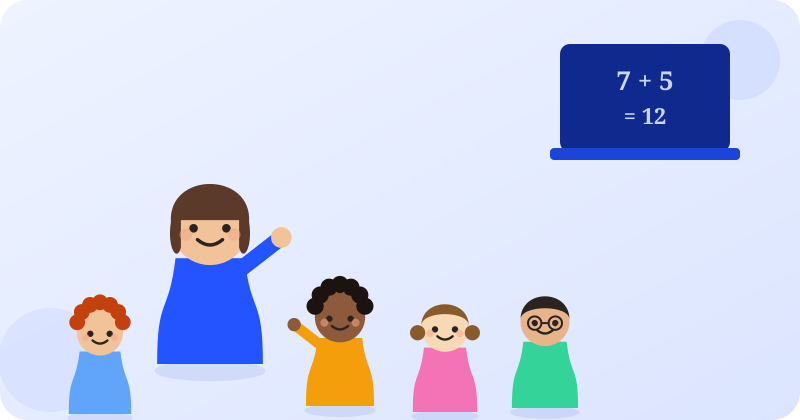

Comprendre l’approche Montessori
Les principes essentiels, le rôle de l’autonomie et des pistes pour les appliquer au quotidien.
Des méthodes, des cours, des techniques de mémorisation et des conseils d’organisation expliqués clairement pour les élèves, les parents et les enseignants.
Nos cours et ateliers réunissent de petits groupes d’élèves autour d’un enseignant attentif à chacun — une ambiance conviviale, propice à la progression de tous.



Six grands univers pour trouver rapidement une méthode, une technique ou un conseil adapté à votre situation.
Montessori, Freinet, pédagogie active, classe inversée et autres approches d’enseignement.
Feynman, répétition espacée, Pomodoro, rappel actif et techniques de mémoire.
Plannings, méthodes de travail et organisation des révisions du primaire au bac.
Cours particuliers en petit groupe, de la moyenne section à la terminale, avec cours d’essai en début d’année.
Public, privé, bilingue, internat : des repères pour comparer les options scolaires.
Motivation, stress, besoins particuliers et équilibre quotidien de l’élève.
Les principes essentiels, le rôle de l’autonomie et des pistes pour les appliquer au quotidien.
Une façon simple de vérifier sa compréhension en expliquant un concept avec ses propres mots.
Un cadre réaliste pour répartir les matières, réviser régulièrement et garder des marges.
Accédez aux ressources correspondant à l’âge et au parcours scolaire.
Des guides synthétiques qui mettent en avant les méthodes, étapes et points clés à retenir.
Des méthodes pédagogiques aux révisions, tout est regroupé au même endroit.
Des contenus pensés pour accompagner le travail scolaire à la maison comme en classe.
Choisissez un thème et commencez par une méthode simple à tester dès aujourd’hui.